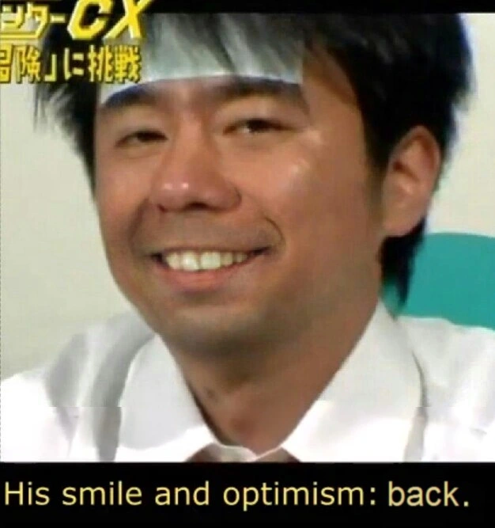

All men dream, but not equally. Those who dream by night, in the dusty recesses of their minds, awake in the day to find that it was vanity. But the dreamers of the day are dangerous men, for they may act their dreams with open eyes to make it reality. - T. E. Lawrence
You are a player playing a game on a field that has no goals. You run up and down the field playing the game for many years, but never scoring, never winning, and never losing. You are simply there. You just exist. You can do nothing more than run up and down the field struggling in vain without the slightest hope of catharsis.
Think about how incoherent it would be if two soccer teams played a game without any marked goals on the field. Their movements and actions would have no meaning. The game would be pointless.
Imagine yourself now waking up in the center of some infinitely large object. You don't know what it is that contains you or how you got there, but you are trapped in a small cave within the object. You look around and realize that there are no holes or openings that you can see so you sit down and wait. After some time the cave you are sitting in begins to shrink. It shrinks and shrinks, faster and faster, pushing you towards the wall, and just when you think you are about to be crushed the wall dissappears and a path is revealed. Relieved you travel down the long and dark corridor until you find yourself in another cave. You sit in this cave and wait until the walls begin to close in on you again. Soon the cave is no more and another path is revealed.
A goal is a willful creation of a pathway. Instead of letting the object dictate where you shall next go, you set a goal which opens up a different path before the cave begins to shrink and forces your future. Without goals you will be lost in the object and you will end up nowhere in particular. You must choose your fate before fate is thrust upon you.
Hopefully the significance of setting goals has been established. So what should you do now? The first step is to think of large and specific life-long goals.
Sometimes people don't know what their dreams, ambitions, or desires are. They don't know what to do with their life. If this is you then maybe one of these three techniques will help:
Use these techniques to find out precisely what you want out of life, and what you expect of yourself. Don't be afraid to go after dreams that some might call unrealistic because that is indeed the only way you will ever reach them.
Only as high as I reach can I grow only as far as I seek can I go only as deep as I look can I see only as much as I dream can I be. - Karen Ravn
